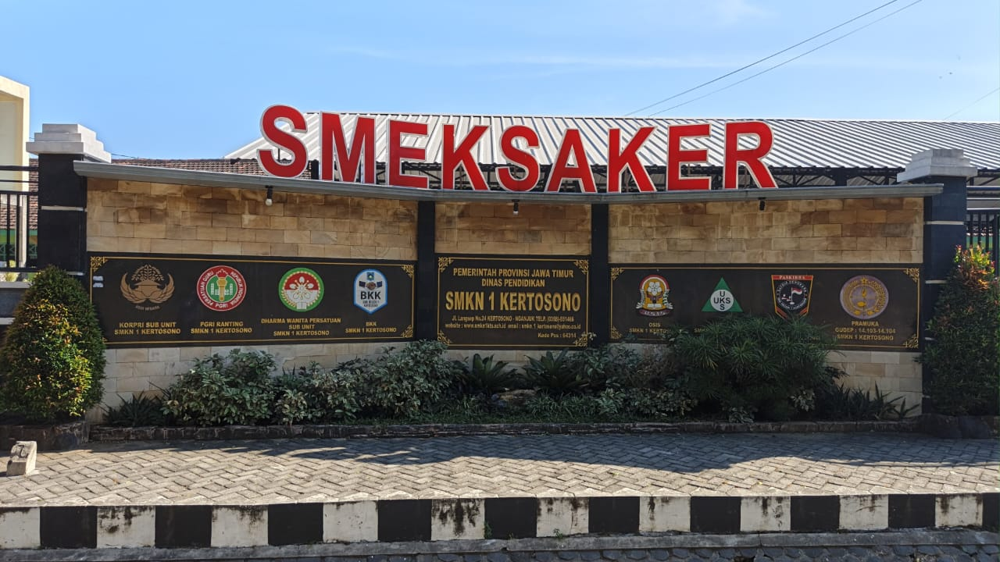
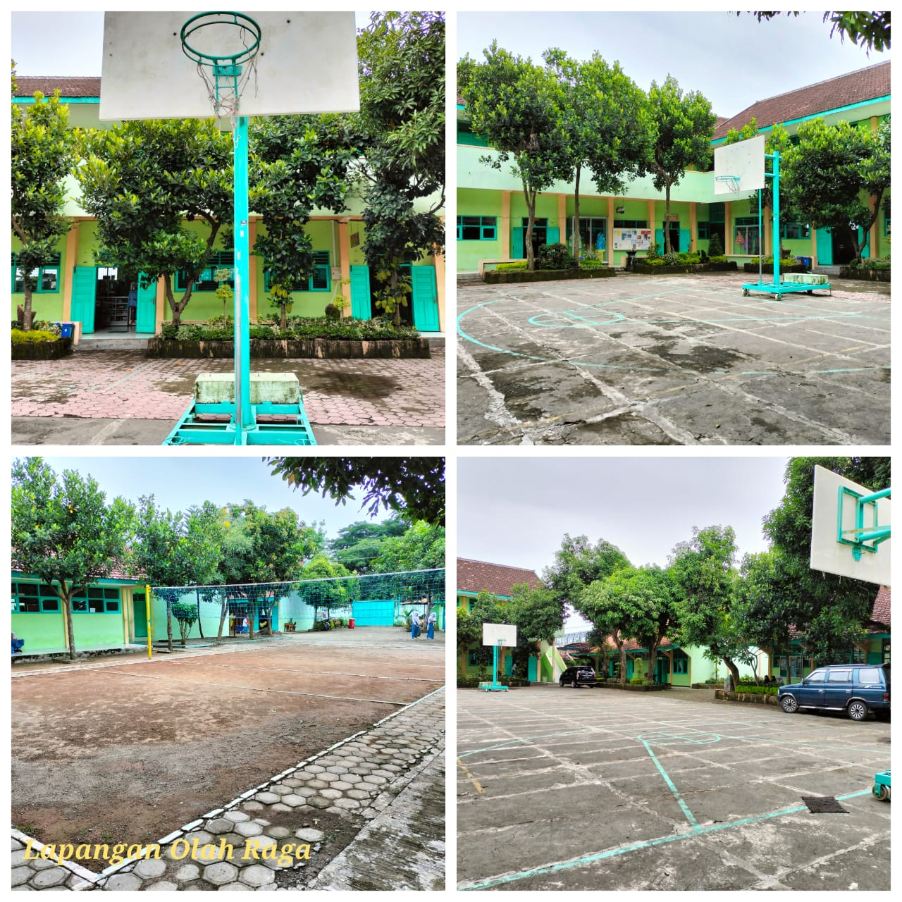
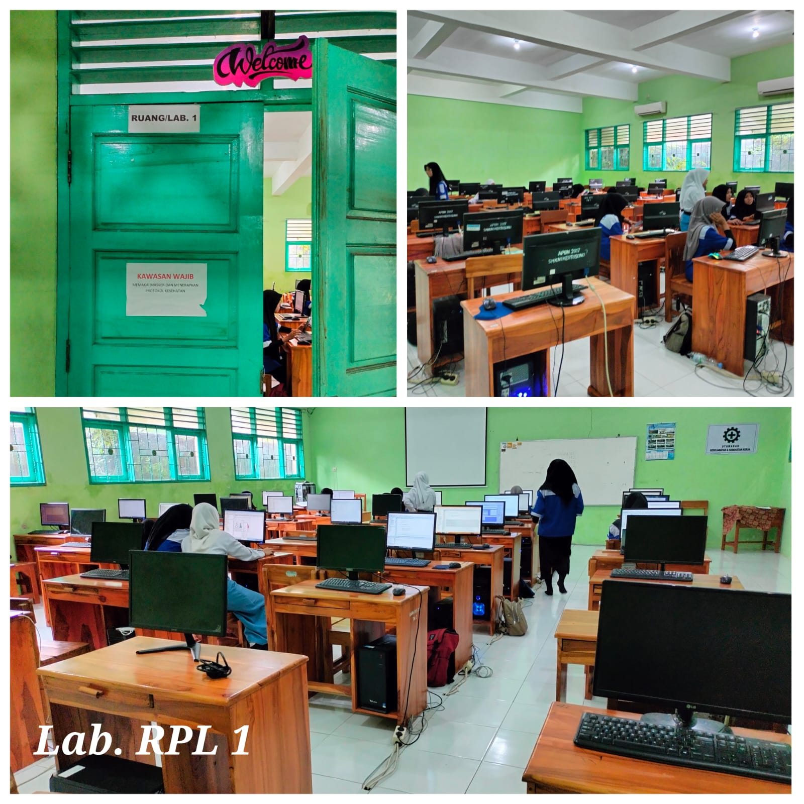
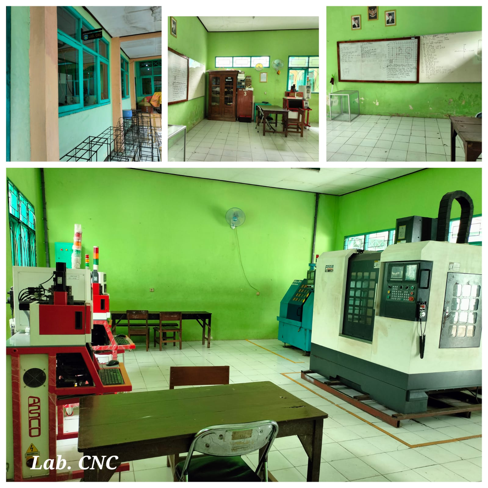

Teknik Pemesinan (TPM)
Kompetensi bidang pemesinan dan proses manufaktur.
Detail jurusan
Sekolah Pencetak Wirausaha. Tempat untuk belajar, mengembangkan keterampilan, dan meraih potensi terbaik.
Selamat datang di website SMK Negeri 1 Kertosono! Kami sangat senang Anda bergabung dengan kami di sini. Di SMK Negeri 1 Kertosono, kami percaya bahwa setiap hari adalah kesempatan untuk belajar, berkembang, dan mencapai hal-hal luar biasa. Kami berkomitmen untuk menyediakan lingkungan yang inspiratif dan mendukung agar Anda bisa mengejar impian dan potensi terbaik Anda. Bersama-sama, mari kita wujudkan masa depan yang cemerlang dan penuh prestasi. Selamat bergabung dan selamat berpetualang di dunia pendidikan yang penuh peluang!
SMK Negeri 1 Kertosono mengintegrasikan semangat para siswa, dedikasi para guru, pengalaman berharga dari alumni, dan komitmen staf yang profesional.
Visi: Menciptakan tenaga terampil, mandiri dan berkualitas dalam menghadapi globalisasi dunia kerja, yang dijiwai oleh nilai-nilai budaya dan karakter bangsa.
Pilih kompetensi keahlian untuk melihat informasi lebih lanjut di situs resmi sekolah.
Kompetensi bidang pemesinan dan proses manufaktur.
Detail jurusanKompetensi otomasi, sistem kendali, dan peralatan industri.
Detail jurusanKompetensi instalasi dan pemeliharaan sistem tenaga listrik.
Detail jurusanKompetensi perancangan dan pengembangan perangkat lunak.
Detail jurusanKompetensi desain, pembuatan, dan produksi busana.
Detail jurusanKompetensi pengolahan makanan dan layanan bidang kuliner.
Detail jurusanKompetensi sistem pendingin dan tata udara.
Detail jurusan


Kami dengan senang hati membuka pendaftaran untuk tahun ajaran baru. Bergabunglah dengan kami dan jadilah bagian dari komunitas pendidikan yang penuh semangat dan prestasi. Di SMK Negeri 1 Kertosono, kami menawarkan berbagai program kejuruan yang dirancang untuk mempersiapkan Anda menghadapi tantangan dunia kerja dengan keterampilan dan pengetahuan yang relevan.
Buka Portal SPMB